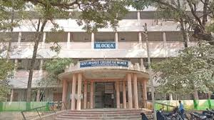
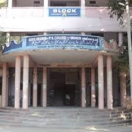
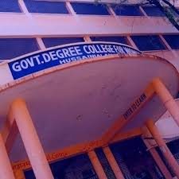

Hussaini Alam College, officially the Government Degree College for Women, Hussaini Alam (GDCWHA), is a prominent women's college in Hyderabad, established 1984, affiliated with Osmania University, offering UG & PG courses in Arts, Science, Commerce, aiming to empower women through quality education in a historic setting (Khursheed Jah Devdi) with facilities like labs, library, and hostels, focusing on holistic development.



Historical Points: Founding (1984): Established to address the need for women's higher education in the old city, starting with just 100 students. Location: Situated within the historic Khursheed Jah Devdi complex in Shah Gunj, blending heritage with modern education. Growth: Evolved from a small institution to serving thousands of students, offering a wide range of undergraduate (UG) and postgraduate (PG) programs. Affiliation: Affiliated with Osmania University, a prominent university in India. Challenges & Strengths: Faced space limitations but maintained its commitment to quality education, fostering intellectual growth and career skills through a vibrant campus life. College Identity: A prominent institution for women's education in Hyderabad, focusing on academic excellence, ethical values, and all-round development. Known for its strong industry interface via a placement cell, preparing graduates for successful careers.